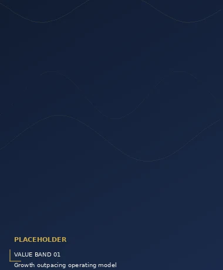
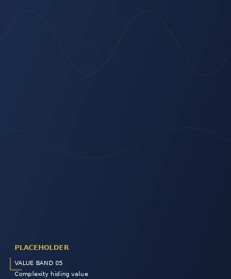

Our Model
Capital can create opportunity. Execution determines what happens next. TexInvestCo combines investment with operating capability, technology, and hands-on execution to help businesses solve structural challenges, strengthen their foundations, and scale with greater discipline.
We invest like owners because we operate like owners.
Businesses rarely struggle because of a single problem. Growth exposes weaknesses in operations. Technology falls behind the business. Processes stop scaling. Management bandwidth gets stretched. Data becomes fragmented. Execution slows.
Capital alone does not solve those problems. Our model is built around a different premise: combine investment with the capability to identify what needs to change — and the operating infrastructure to help change it.
That means working alongside leadership to strengthen the business itself: its operations, systems, technology, workflows, and ability to execute.
Capital alone does not solve execution problems. Operators do.
The TexInvestCo Model
We bring together four elements that are often separated across investors, consultants, technology firms, and operating partners. At TexInvestCo, they work as one model.
Investment creates the capacity to move. We approach capital as a strategic resource — deployed in support of a clear operating thesis.
We look beyond recommendations to the mechanics of the business: people, processes, workflows, controls, service delivery, and management infrastructure.
Technology, AI, automation, and data are integrated into the operating model where they can improve execution, visibility, efficiency, and scale.
We work alongside founders, management teams, and partners with a shared interest in building lasting enterprise value.
The advantage is not any one component. It is the integration of all four.
How the Model Works
Every business is different. The sequence, however, is consistent: understand the real constraint, establish priorities, build the operating foundation, and compound what works.
We examine the operating environment, strategic priorities, technology, workflows, organizational dependencies, and the constraints limiting performance or growth. The objective is clarity: identifying what actually matters.
Capital, management attention, technology, and operating resources must point in the same direction. We establish a practical operating agenda around the changes that can create the greatest long-term impact.
Plans only create value when they are implemented. Depending on the business, that may mean strengthening operations, rebuilding workflows, introducing automation, modernizing technology, adding specialist capability, or creating new operating infrastructure.
Once the operating foundation is stronger, the focus shifts from fixing constraints to extending capability. Processes become repeatable. Technology supports growth. Management gains visibility. Operating capacity expands without unnecessary complexity.
Understand → Align → Execute → Scale
The Operating Platform
TexInvestCo's model is supported by Murkez Technologies, our operating platform.
Murkez brings business operations, technology, AI, managed services, and execution capability under one operating structure. It gives TexInvestCo the ability to move beyond identifying opportunities and into the practical work required to strengthen and scale an organization.
Depending on the need, that capability can extend across finance and accounting, customer engagement, IT, HR, software development, back-office operations, automation, and intelligent workflows.
The result is a model with the ability to both think and do.
What Guides the Model
The model is flexible in application but consistent in the way we make decisions.
We begin with the business fundamentals and the operating reality. Decisions should survive scrutiny beyond the immediate opportunity.
A good strategy without implementation remains a presentation. We focus on turning decisions into operating outcomes.
Capital, management, technology, and execution should reinforce the same objective. Activity without alignment creates complexity.
We focus on building stronger businesses — not reacting to every temporary signal around them.
Where the Model Creates Value
Our model becomes especially relevant when growth or complexity begins testing the existing operating structure.
The business has opportunity, but its processes, systems, or management capacity are struggling to keep up.

Legacy platforms, fragmented systems, or manual workflows are limiting visibility, productivity, or scale.
Strong ideas exist, but ownership, resources, processes, or accountability are spread across too many disconnected functions.
The company needs operating infrastructure, specialist expertise, or technology that would take significant time to build independently.
The underlying business is strong, but inefficiency or structural friction is preventing that strength from translating into performance.

Our model connects the pieces.
TexInvestCo brings the investor's perspective together with operating experience, technology capability, and execution infrastructure. We believe stronger businesses are created when the people helping shape the strategy also understand what it takes to implement it.
The best investments are built, not bought.
Build Beyond Capital
We work with founders, operating businesses, co-investors, and partners who see value in combining ownership with execution.
Founders, co-investors, and operating partners:
hello@texinvestco.com